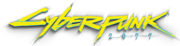
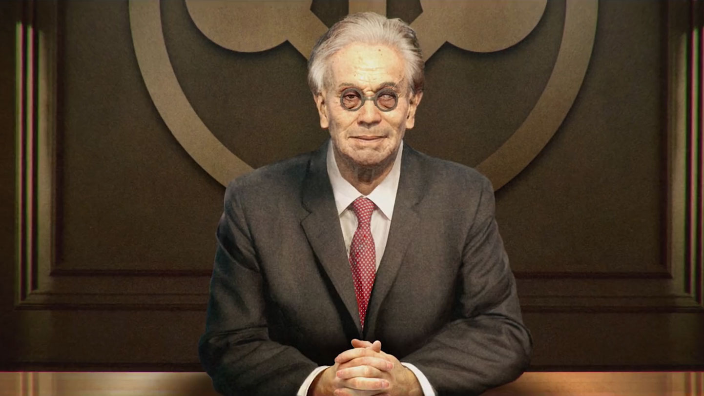

V
V to płatny zabójca, który próbuje się wybić w Night City. Jego charakter jest uzależniony od wyborów gracza, posiada style walki takie jak walka wręcz, strzelanie lub hakowanie. Jego celem jest zdobycie reputacji w mieście, a także znalezienie sposobu na pozbycie się czipu, który został wszczepiony w jego głowie.
Judy Alvarez
Judy to specjalistka od uzbrojenia i sprzętu w grze Cyberpunk 2077, która pomaga V w misjach. Judy to kobieta o otwartym sercu i niezwykłej empatii. Mimo że jest skryta i nieśmiała, jest jednym z najlepszych towarzyszy V.
Johnny Silverhand
Johnny to legendarny muzyk i rebeliant, lider samurajów. Znany z buntowniczego charakteru i nieprzebierający w słowach, Johnny jest jednym z najbardziej ikonicznych bohaterów Cyberpunka. W grze Cyberpunk 2077 jest wcielony przez Keanu Reevesa.

Saburo Arasaka
Saburo to założyciel i szef korporacji Arasaka, jednej z najpotężniejszych w świecie Cyberpunka. Arasaka jest znaną z bezwzględności i gotowości do osiągania swoich celów za wszelką cenę. Saburo jest również ojcem Hanako Arasaka.
Adam Smasher
Adam to niesamowicie silny i niezniszczalny cyborg, pracujący jako żołnierz dla korporacji Arasaka. Smasher to prawdziwy terminator, który nie zna litości dla swoich przeciwników. W grze Cyberpunk 2077 Smasher jest jednym z najważniejszych antagonistów.
Rogue
Rogue to była partnerka Johnny'ego Silverhanda i właścicielka baru, w którym spotyka się elita Night City. Rogue to kobieta o tajemniczej przeszłości i skomplikowanej osobowości. Mimo że Johnny i Rogue rozstali się w niesprzyjających okolicznościach, nadal żywiła do niego uczucia.
Goro Takemura
Goro to wysoko postawiony członek korporacji Arasaka, który pracuje jako ochroniarz i dyplomata. Takemura to człowiek, któremu zależy na swojej pracy i honorze. Chociaż początkowo jest przeciwny V, później staje się jego sojusznikiem.
Dexter DeShawn
Dexter to płatny zabójca i szef gangu, dla którego pracuje V na początku gry Cyberpunk 2077. Dexter jest człowiekiem o ostrych jak brzytwa zębach, zawsze dążącym do swojego celu. W swoim świecie nie uznaje innych reguł poza własnymi i często wprowadza swoich pracowników w niebezpieczne sytuacje.
Jackie Welles
Jackie to najlepszy przyjaciel V i partner w biznesie. Jackie to człowiek o dobrym sercu, gotowy zawsze pomóc swoim przyjaciołom. Mimo że czasami wpada w kłopoty, zawsze potrafi znaleźć wyjście z trudnych sytuacji.
T-Bug
T-Bug to hakerka i członek gangu V. Jest niezwykle inteligentna i biegła w korzystaniu z komputerów. Pomaga V w przejęciu kontroli nad czipem w jego głowie. Mimo że jest niezwykle kompetentna w swojej pracy, to nie jest w pełni zaufana przez V.
Placide
Placide to członek gangu V, który pomaga mu w misjach. Jest niezwykle tajemniczy i trudny do odczytania. Mimo że jest lojalny wobec gangu, którym się zajmuje, to ma swoje własne cele, które nie zawsze zgadzają się z celami V. W trakcie rozwoju fabuły, Placide staje się coraz bardziej podejrzany i tajemniczy.
Hanako Arasaka
Hanako to córka Saburo Arasaka i wysoko postawiona członkini korporacji Arasaka. Hanako to kobieta o tajemniczej przeszłości i złożonej osobowości, która potrafi skutecznie działać w interesie swojej rodziny. W grze Cyberpunk 2077 V podejmuje z nią ważną misję.
Patryk Balicki _